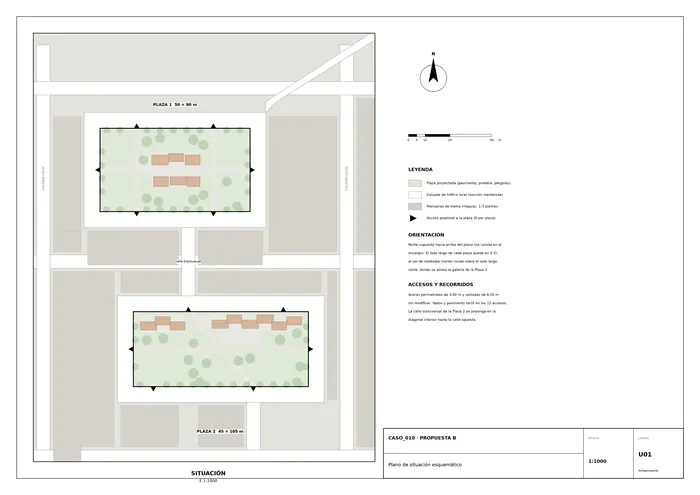
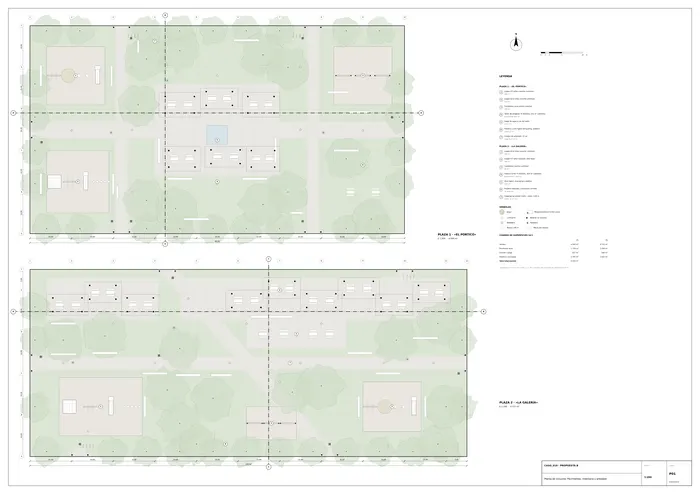
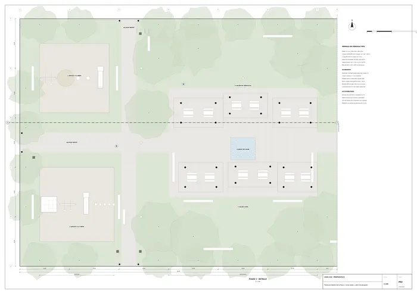
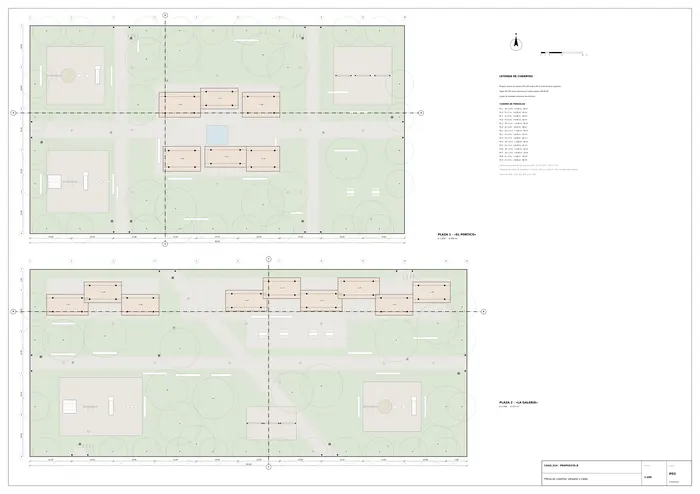
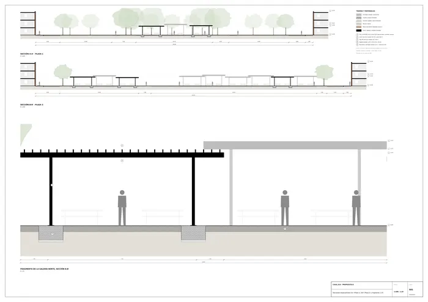
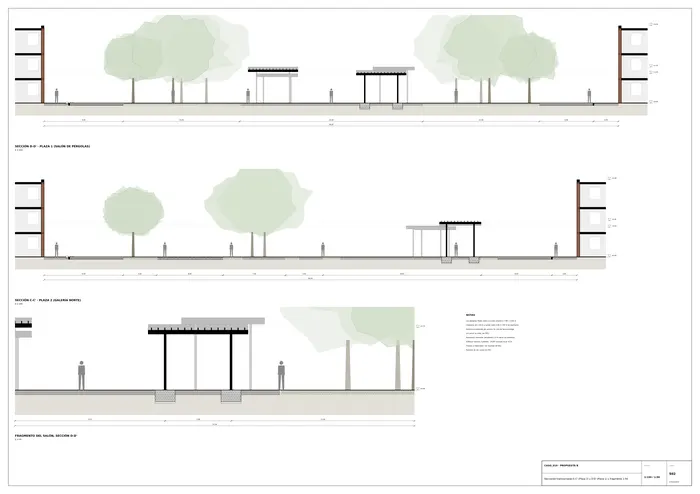
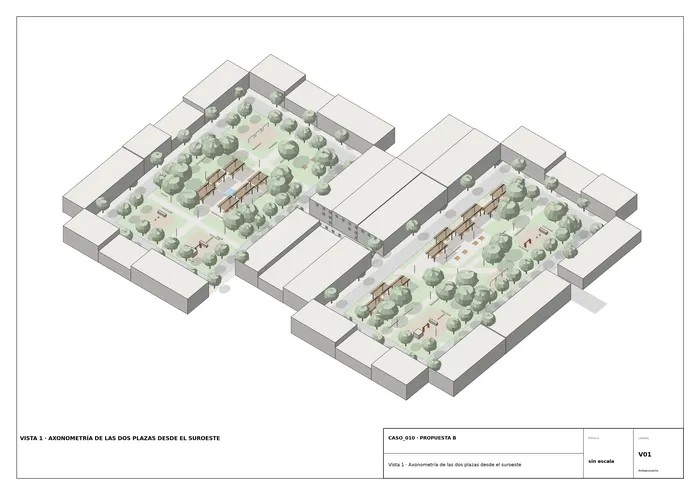
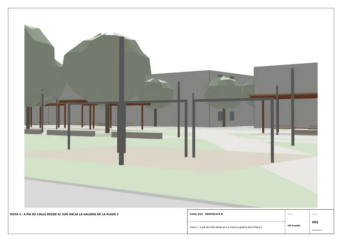
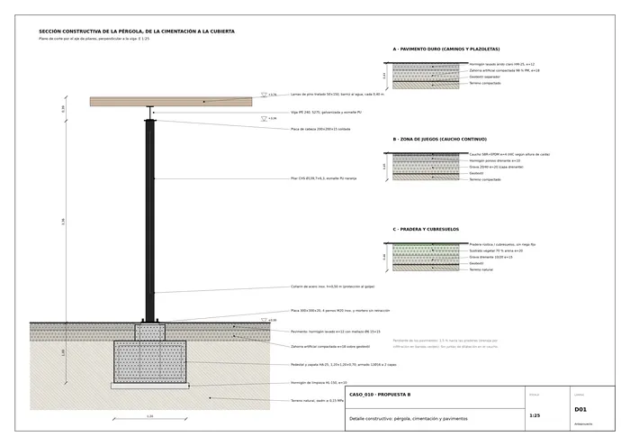

Caso 010 · Galpón Estudio · 2014 · espacio público (plazas de barrio)
El boceto muestra, desde la calle, una plaza entrevista entre árboles de copa enorme: unos pórticos ligeros, de cubierta plana y a alturas distintas, flotan sobre el verde. No hay reconocimiento de obra alguna; se proyecta de forma independiente.
Lectura literal. Los pórticos son volúmenes reales (apoyos delgados y cubierta plana) situados en el centro de un prado, con árboles grandes a los lados y bolardos en el borde. Daría una plaza con un grupo de pérgolas centrado y arbolado perimetral, repetido en las dos parcelas.
Lectura diagramática. Las líneas son relaciones. El pórtico es un umbral de sombra entre la ciudad y la plaza, y por eso se dibuja visto desde la calle y a través del arbolado. Los árboles son el marco, y los bolardos, el límite. Las cubiertas que se solapan a distintas cotas dicen que la sombra es un espacio continuo, no un objeto, y que no hay una pieza «tipo». Esta lectura cuestiona dos supuestos que el encargo no impone: que las dos plazas deban ser gemelas (el encargo pide «lenguaje coherente pero adaptado a cada parcela») y que los caminos deban seguir la ortogonalidad de la parcela.
| 1 «Gemelas» (literal) | 2 «Cuenco» (diagramático) | 3 «Salón y galería» (elegido) | |
|---|---|---|---|
| Idea | Retícula 3×3 de pórticos centrada, cruz ortogonal, plazas idénticas | Vaso hundido 0,90 m como depósito de tormentas, gradas y pérgolas en el borde | P1: campo de pórticos central, juegos en los extremos. P2: galería lineal al norte y diagonal que prolonga la calle transversal |
| Ocupación / geometría | Copia la parcela | Concéntrica | Responde a cada parcela (1:1,8 y 1:2,3) |
| Sección | Plana | Hundida | Plana, con sombra en dos capas (pórtico y copa) |
| Programa | Cumple, sin diferencias | Cumple | Cumple, con variedad de estancia |
| Clima (Cfa, sol al norte, tormentas) | Sombra uniforme | Retiene agua, pero se inunda tras cada lluvia | Galería al norte y lamas abiertas; praderas drenantes |
| Vistas / seguridad | Buena | Mala: el centro queda oculto desde la calle | Buena, con 6 accesos visibles por plaza |
| Accesos / normativa | Correctos | Rampas del 6 % de 15 m para salvar 0,90 m: difícil con parcelas de 45-50 m | Todo a nivel; pendientes ≤ 1,5 % |
Se descarta el 1 porque gasta la oportunidad de dar a cada plaza identidad propia y deja las dos igual de sombreadas aunque la geometría y el sol piden cosas distintas. Se descarta el 2 porque esconde la plaza de la calle (contra «uso seguro a cualquier hora» y «reconocible desde la ciudad»), complica la accesibilidad y encarece el movimiento de tierras. El 3 aprovecha que las dos parcelas son distintas, sin perder el lenguaje común (pórtico naranja, lama de madera, pavimento claro).
Norte supuesto arriba (el encargo no lo fija); el lado largo queda en E-O, de modo que el sol de mediodía incide sobre el lado largo norte.
Plaza 1 «El Pórtico» (50×90 m, 4.500 m²). Cruz de caminos de 3-4 m con 6 accesos. En el centro, el salón de pórticos: 6 módulos entre 3,40 y 4,20 m, 311 m² cubiertos, con 12 mesas con bancos sobre una plazoleta de 660 m², y un juego de agua a ras (22,5 m²). Al oeste, juegos 0-5 años (196 m²) y 6-12 años (225 m²). Al este, calistenia (196 m²) y ocio ligero (2 mesas de ping-pong y 2 de ajedrez, 112 m²). Entre ellos, praderas arboladas.
Plaza 2 «La Galería» (45×105 m, 4.725 m²). Los dos viales transversales (supuestos en la acera norte, eje x=33, y en la sur, eje x=72) se continúan en una diagonal de 3,5 m que atraviesa la plaza. Al norte, la galería: 9 módulos escalonados (425 m² cubiertos, +3,40 a +4,20 m) con una abertura de 16 m alineada con la calle, 18 mesas y bancos corridos. Al sur: juegos 6-12 años (280 m²) y 0-5 años (168 m², con seto bajo), calistenia (96 m²), ocio ligero (4 mesas, 168 m²) y pradera arbolada con 31 árboles.
| Exigido | Propuesto | Cumple / desviación |
|---|---|---|
| Juegos infantiles, niños de distintas edades, suelo seguro | 4 zonas: 0-5 años (196 y 168 m²) y 6-12 años (225 y 280 m²), caucho continuo drenante | Cumple. Dos tipos y cuatro unidades |
| Estancia y descanso con mobiliario | 36 mesas con bancos y 29 bancos sueltos (P1: 14 y 16; P2: 22 y 13) | Cumple |
| Espacios con sombra | 15 módulos de pérgola (736 m²) y arbolado (≈ 1.810 + 1.660 m² de proyección de copas) | Cumple |
| Zonas verdes y arbolado, bajo mantenimiento | 37 + 31 árboles; pradera rústica y cubresuelos: 2.707 + 2.625 m² | Cumple |
| Recorridos peatonales accesibles | Caminos de 3-4 m, pendiente ≤ 1,5 %, vados y pavimento táctil en 12 accesos | Cumple |
| Equipamiento deportivo o de ocio ligero (opcional) | Calistenia (196 y 96 m²), ping-pong y ajedrez (112 y 168 m²), juego de agua | Cumple. Calistenia de P2 menor que la de P1, por falta de sitio junto al borde sur |
| Iluminación y mobiliario urbano | 24 luminarias LED, 13 papeleras, 6 bebederos, 4 aparcabicis, bolardos en accesos | Cumple |
| Superficie total 7.000-12.000 m² | 9.225 m² (4.500 + 4.725) | Cumple |
| Número de unidades de cada tipo | No fijado por el encargo; definido por el proyectista como arriba | Cumple (sin cifra de referencia) |
| Accesibilidad universal | Todo a nivel, sin escalones ni rampas; mesas con espacio de aproximación | Cumple |
| Mantener la sección de las calzadas | No se toca ninguna calzada ni acera | Cumple |
| Sin edificación cerrada | Solo pérgolas abiertas (lamas con 50 % de abertura) | Cumple |
| Seguridad del equipamiento infantil | Superficies de absorción de impacto (caucho), separación entre juegos de 2 m, sin elementos sobre 2,4 m | Cumple (a verificar con UNE-EN 1176/1177 en proyecto de ejecución) |
| Uso seguro a cualquier hora, reconocible desde la ciudad | Sin muros ni sotobosque alto; pórticos visibles desde las calles; luz en todos los caminos | Cumple |
| Propuesta conjunta, lenguaje coherente y adaptado | Mismo pórtico, lama y pavimento; esquema distinto en cada plaza | Cumple |
| Edificación existente | Ninguna (no hay preexistencias en el encargo) | No procede |
Desviaciones y supuestos: se supone una orientación (norte arriba), la acera de 3 m y la calzada de 6,5 m, y que los dos viales transversales de la Plaza 2 entran uno por cada lado largo. La vista 2 omite los árboles cercanos a la cámara para dejar ver la galería.
Acero galvanizado con imprimación epoxi y esmalte poliuretano naranja apagado, como en el boceto. Lamas de pino tratado con barniz al agua. Pavimento de hormigón lavado de árido claro, e = 12 cm sobre 18 cm de zahorra y geotextil. Juegos con caucho SBR+EPDM de 4 cm sobre hormigón poroso de 10 cm y 20 cm de grava. Pradera con 20 cm de sustrato sobre 15 cm de grava drenante. Bancos de madera sobre perfil de acero.
Seis accesos por plaza, a nivel, con vado en el encuentro con la acera y pavimento táctil de botones. Itinerarios de 3,00 a 4,00 m con pendiente ≤ 1,5 %. Bolardos Ø25 cm cada 1,20 m, que impiden el paso de vehículos pero dejan 3,80 m libres entre ellos. Mesas con espacio de aproximación en silla. Al ser un espacio abierto y perimetralmente accesible, no se necesitan recorridos de evacuación específicos; los juegos están a menos de 10 m de un camino.

U01 · Plano de situación esquemático
P01 · Planta de conjunto. Pavimentos, mobiliario y arbolado
P02 · Planta de detalle de la Plaza 1 (zona oeste y salón de pérgolas)
P03 · Planta de cubiertas: pérgolas y copas
S01 · Secciones longitudinales A-A' (Plaza 1), B-B' (Plaza 2) y fragmento 1:25
S02 · Secciones transversales C-C' (Plaza 2) y D-D' (Plaza 1) y fragmento 1:50
V01 · Axonometría
V02 · Perspectiva
D01 · Detalle constructivo: pérgola, cimentación y pavimentosMemoria de la propuesta tal como la entregó el sistema. Se han omitido las notas internas del proceso (revisiones, control de reconocimiento y referencias a archivos de trabajo).